CASE FILE 03 · ASHEERTY · SOLO RUN · iOS + ANDROID
Live on both app stores · earlyBuild your family tree. Then put it on the wall.
Browse the whole build (15 screens) ↘
§1 CONTEXT
Many families still keep their tree on paper in one person's drawer.
Asheerty lets them build the tree in a mobile app. The tree becomes a painting that is printed, framed and delivered.
It is not a PDF export. It is a real object the family can hang on the wall.
§2 THE CONSTRAINTS
- Family trees are irregular. Generations, marriages and large branches still need to produce a balanced print.
- The artwork is physical: errors cost real money in print and shipping, so human review must gate production.
- I built the iOS app, Android app, dashboard, backend and fulfilment flow while working two other jobs.
- Cultural gravity: names, order and lineage must be treated with respect. Families will hang this on a wall.
§3 MY OWNERSHIP
- I designed and built everything solo, using Claude Code and Codex where they helped.
- I built the React Native editor for members, branches, relationships, generations and preview.
- I built the React dashboard for review, layout correction, approval and print readiness.
- I implemented the Bun and Express backend.
- I built the AI-assisted recognition flow that helps find faces, read names and suggest relationships from family material.
- I built the generation flow that turns the reviewed family tree into organic, family-specific artwork ready for print.
- I built the order flow from submission to a framed print at the door.
§4 SYSTEM MAP
FAMILY MATERIAL (photos · names · documents) │ ▼ AI RECOGNITION (faces · names · possible relationships) │ ▼ HUMAN REVIEW (check · correct · approve) │ ▼ FAMILY DATABASE ──▶ INTERACTIVE TREE (mobile app) │ ▼ AI ARTWORK PIPELINE (layout · organic composition · generation · refinement) │ ▼ FINAL REVIEW ──▶ PRINT PREPARATION ──▶ PHYSICAL ARTWORK ──▶ DELIVERY
§5 KEY DECISIONS
Every technical choice serves the final framed print. The app exists so a family can get the tree onto their wall, not the other way around.
A dashboard step catches layout problems while they're still pixels. Once ink touches paper, a mistake costs money, shipping time, and a family's trust.
AI helps read the original material and create the final artwork. Family relationships and the piece sent to print still pass through human review.
It launched recently and has under 100 users. I am saying that plainly. It is still live on both app stores with physical fulfilment, and I built it solo.
§6 OUTCOME
§7 FAILURE MODES, HANDLED
The review dashboard flags and corrects it before print.
Explicit order-state machine with operational visibility.
The approved final artwork is stored so the exact piece can be printed again.
Preview + review loop before anything physical happens.
§8 THE WHOLE BUILD
The family app, and the work behind every print.
Explore each part individually. These are original interfaces from the project itself; capture context is noted below.
CLICK TO EXPLORE ↗
Build the family tree
Original mobile UI, public project marketing captures, and onboarding exports with a sample family.

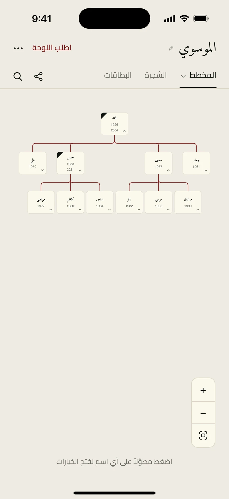
The diagram turns relationships into a navigable family tree.

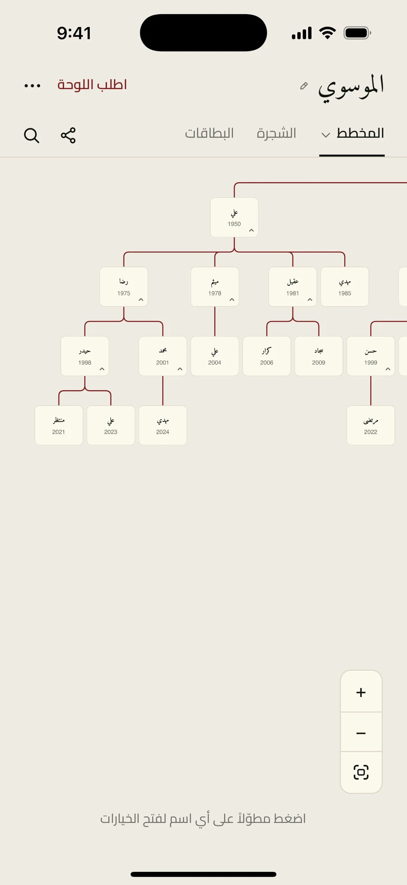
Branch exploration helps a large family tree stay usable.

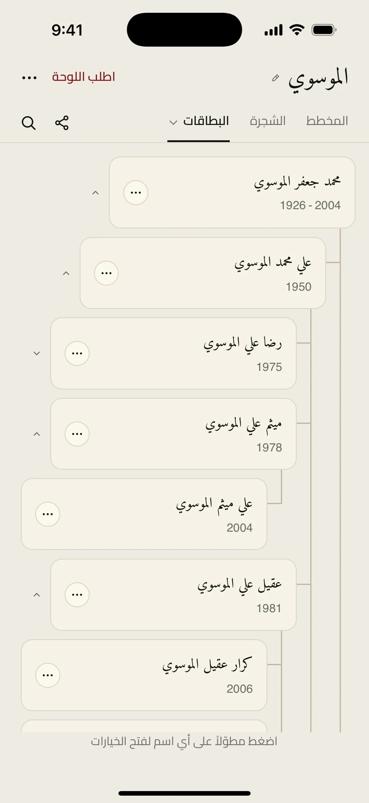
A card list complements the visual tree when someone wants to find a person quickly.

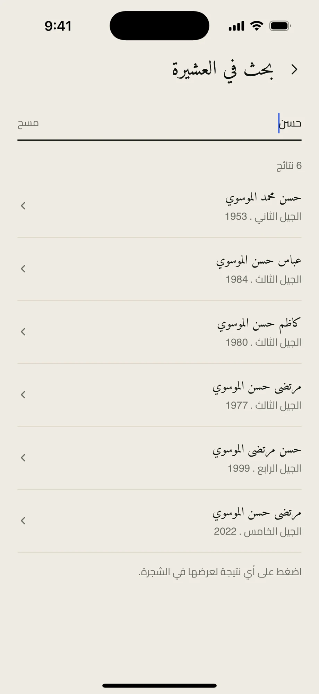
Search provides a direct route into an individual record.

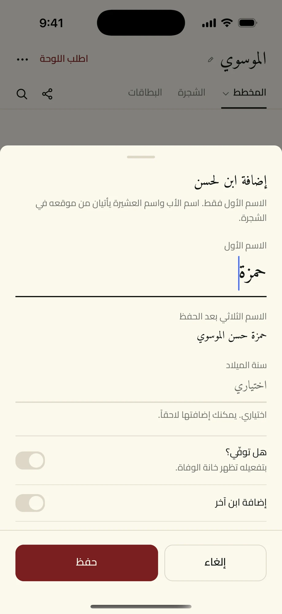
The editor places name, relationship, and life details in one sheet.

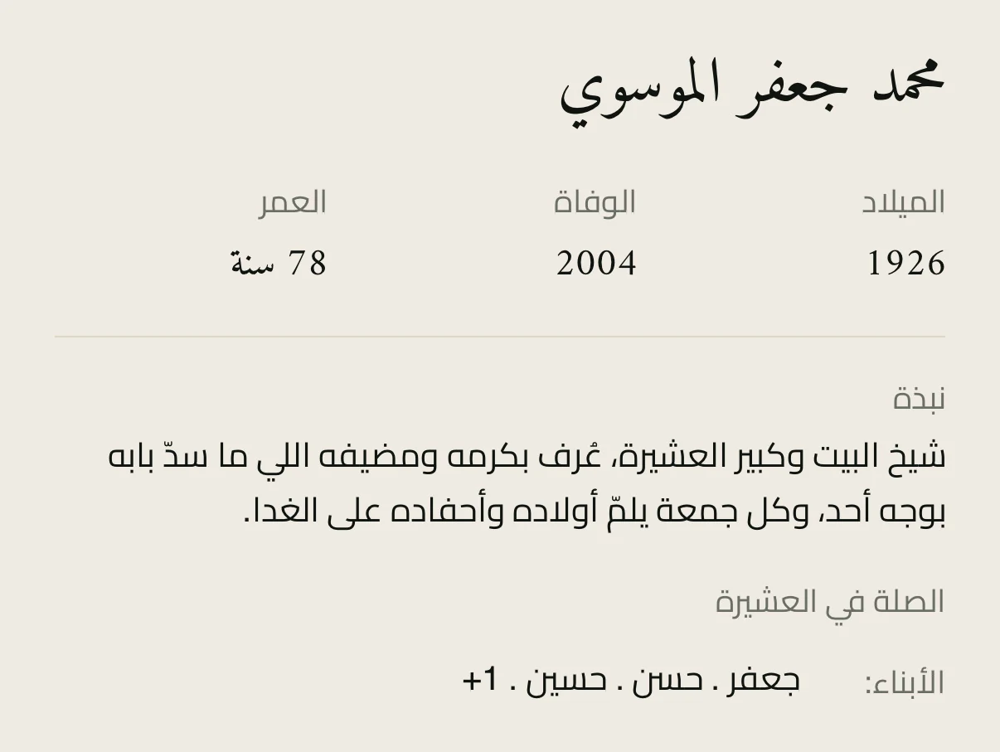
The person detail includes the story alongside dates and relationships.

The app gives sharing a dedicated flow with visible permissions.

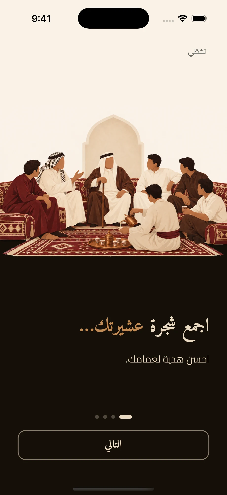
The first onboarding screen introduces the purpose of the product.

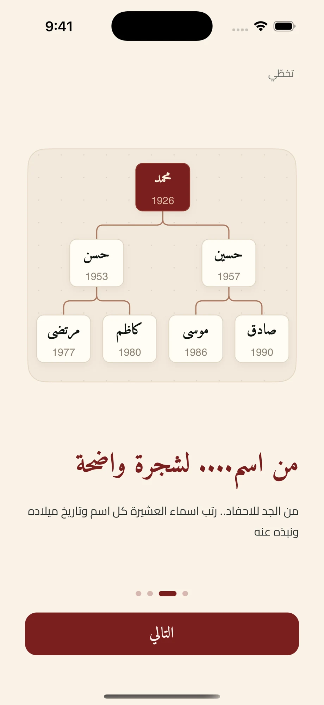
The next onboarding step shows the transition from a name to connected people.

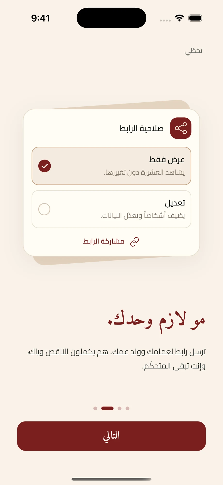
Sharing is introduced before the user enters the main tree experience.

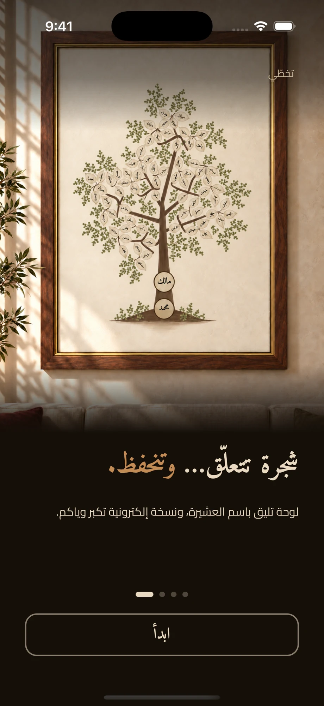
The final onboarding step links the living family tree to a printed piece.
From an order to a framed print
The original Arabic React admin dashboard: statistics, order tracking, print sizes, prices, and configuration editing. Fictional records throughout.

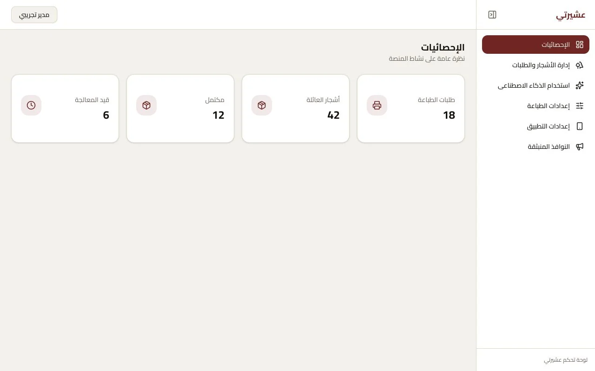
Order and tree totals in the actual admin interface, populated with fictional counts.

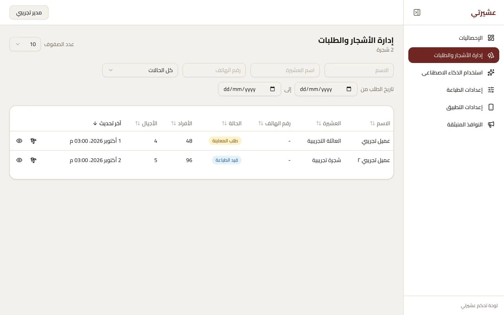
The orders table exposes customer context, print size, member counts, and status using fictional records.

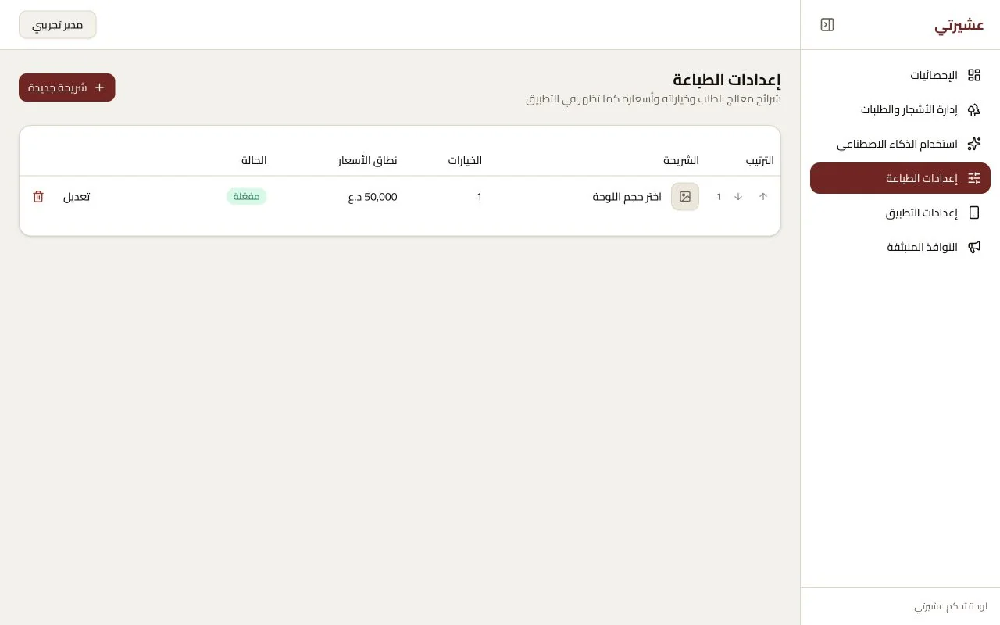
Print configurations connect sheet dimensions, member limits, pricing, and available options. Demo configuration shown.

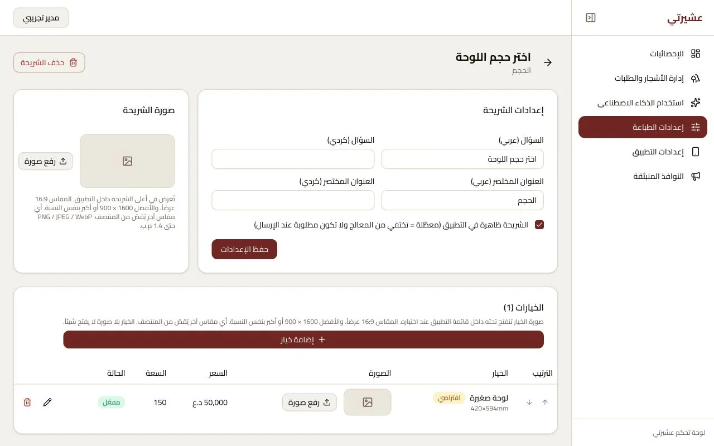
The actual print setup editor, with a fictional size and option, shows the controls behind the mobile offer.
§9 WHAT I LEARNED
A bug on screen is annoying. A bug that gets printed, framed and shipped costs real money.
§10 WHAT I'D CHANGE TODAY
I would test printers, colour, paper and sizes earlier. I would also build a shareable preview so the whole family can check the tree before someone orders it.